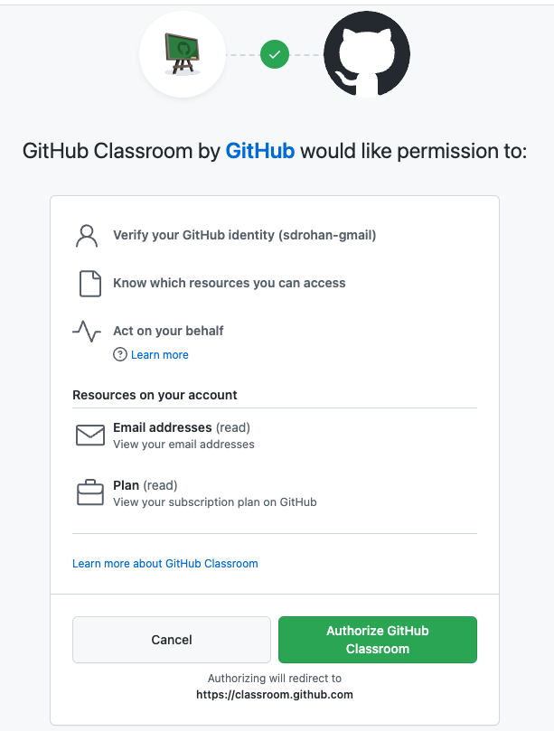
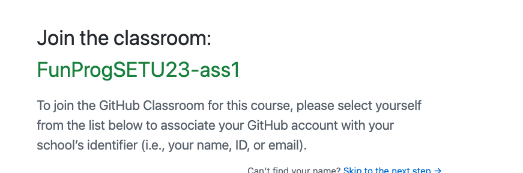
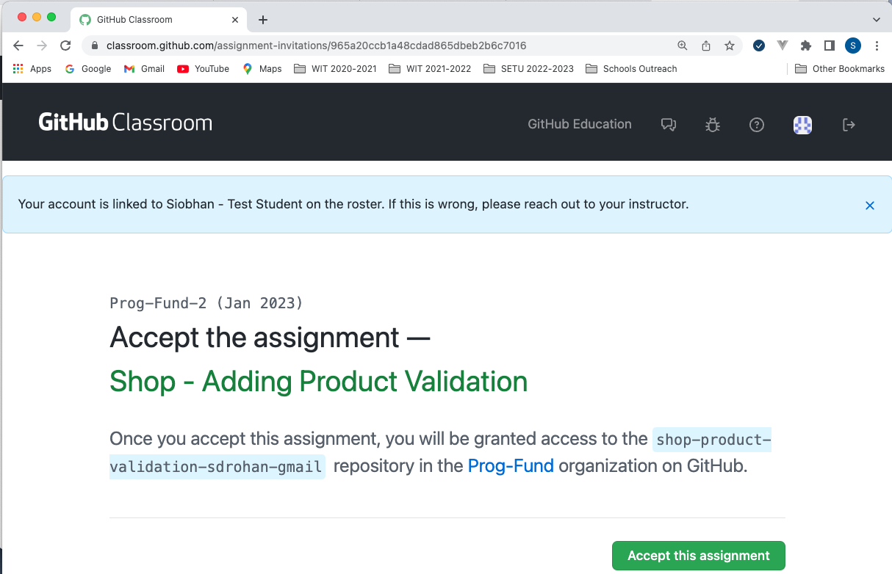
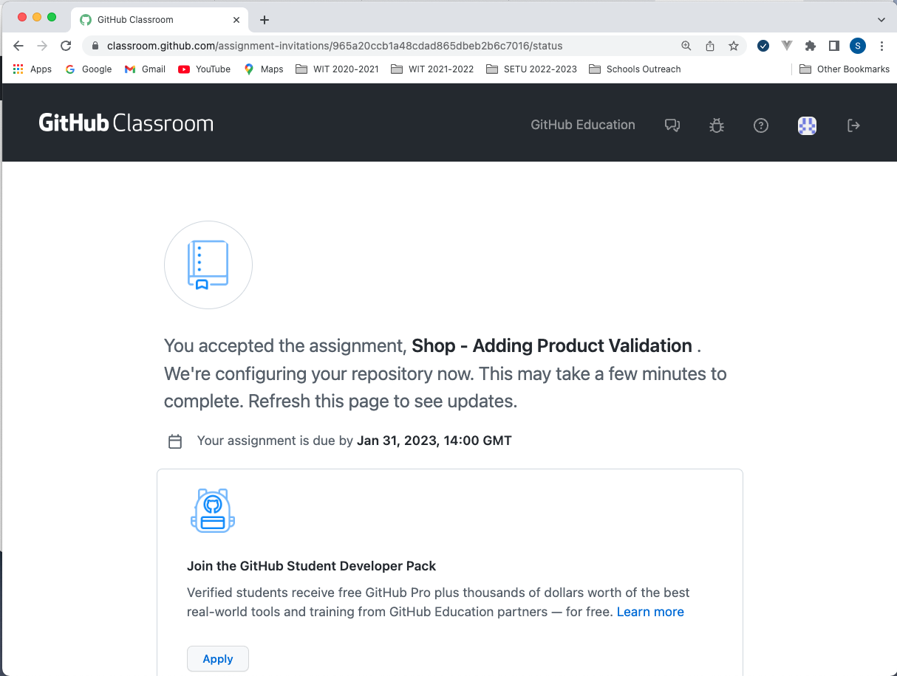
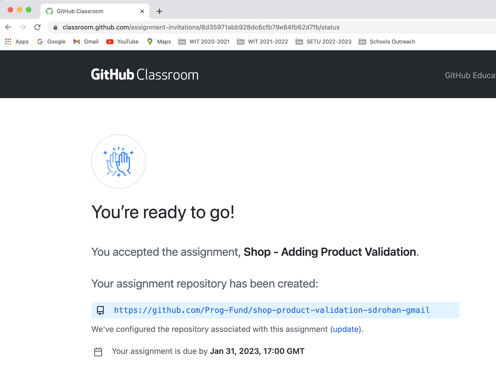

Assignment 1
Functional Programming using Haskell
Assignment 1
Student Marks Analysis - 20% of Module Grade
#1. Student Marks Analysis
You are tasked with reading in a csv file, which is made up od a randomised set of student marks. You are asked to do analysis on this file and present the results back on the console.
###Data Set The data is in the format of a csv file. It is of the following form:

You wlil be asked to perform a number of calcluations on the data. This assignment should be submitted using the stack package. You should accept the assigment started code (just a default stack package) from a GitHub classroom repo, pushing regularly.
You will be asked to ‘submit’ your code in two ways
- by ensuring the latest version has been pushed to the GiHub Classroom repo
- submitting the code to Moodle
#2. Assignment Approach
We will be using GitHub Classroom for this assignment. I am assuming you are using VS Code - if not just ignore the steps that mention VSCode and ensure that you have an appropriately helpful IDE to work with. Also, if you have not used VS Code, note what you used and how you set it up.
Overall Steps in the Assignment:
- Accepting the Assignment: You will be given an invite link to the assignment in our GitHub Classroom area. When you click on the link, you accept the assignment from our Github Classroom; this will create a new remote repository for you in my classroom area in GitHub.
Details: To start working on it, click on this invite link:
https://classroom.github.com/a/x_kMjvxX Get this link
You will be prompted to authorise GitHub classroom:

Once you do this, you will be redirected to join the classroom:

Select your name from the list and then accept this assignment (your assigment will be called ass1):

Github will start creating a repository for you:

When you refresh the page, you should see that a repo has been created for you:

-
To use this in VSCode (recommended), you need to add the GitHub Classroom extension to your VS Code install.

-
Click on the GitHub icon on the sidebar:

-
You will then see:

-
Clone via VS Code: You will then clone this remote repo onto your local machine (via VSCode). This will setup a local project in VSCode for you with starter code. (empty stack project)
-
Complete the assignment, as per spec. You should regularly commit and push the code.
-
Submitting: When you are ready to submit, you will ensure that you have pushed your last commit to GitHub. You will also zip your code and submit it via the dropbox in Moodle. Both of these must be done by the submission date.
#3. Starter Code
The code you accept as the ‘starter’ is simply a new stack project with the addition of a data file studentsfp.csv i.e.

#4. Specification
You are asked to calculate and print (to the console) the following data:
-
The average of each students’ marks. (This should be printed beside the full set of data i.e. will look like an extra column)
-
The averages of each of the modules’ marks. (These values should be below the given data as an extra column).
-
Caclulate the standard deviation of each of the modules’ marks (these values should be put in the row below the averages).
-
The student who has the highest overall average mark (with that average mark)
-
The student who has the highest mark in Functional Programming. (In the case of there being a number of students at this mark, any one of those students will be a valid answer).
-
The student who has the lowest mark in Functional Programming(In the case of there being a number of students at this mark, any one of those students will be a valid answer).
#5. Marking Scheme
This assignment is worth 20% of you module.
The marks (100) are broken down into the following :

You can also get the soft copy from here: Marking Scheme
#6. Submitting your work
Deadline
- Week 1 of Easter holidays: 18:00 PM on Monday , 3rd April 2023.
Submitting
-
GitHub: Do a final commit of all your work and push it to your remote repository.
-
Moodle:
- Rename your project name using the naming convention firstnamesurname e.g. maireadmeagher.
- Zip the folder containing all the project files, and name the folder firstname_surname.zip. No WINRARs please!
- Upload this zip file to Moodle.
Interviews
It is compulsory that you are interviewed on your submission in order to demonstrate both Understanding and Authorship.
These interviews will typically take place in labs the week after submission (i.e. Week 7/8).
During your interview, you will be asked to explain your work. This is to ensure that the work is your own. You may be asked (for example) to explain:
- Any of the code.
- How a specific function works
- How specific functions work together
- Overview of your approach to assignment
- etc.
If you do not present for your interview you will receive 0 for the interview. As the interview grade is a multiplier for your assigment grade, should you fail to show for your interview, you will receive zero, resulting in an overall grade of zero for your submission.
Referencing external materials
If you use code other than from lectures and labs (e.g. from StackOverFlow, other GitHub accounts, etc), you should always reference it. Failure to do so is plagiarism and will lead to a zero mark.
How is the final mark calculated?
The final mark is calculated using the following formula:
- (((Functionality of Code + Style + Extra Functionality Credit) ) * Interview Mark) / 10
Example:
- Functionality of code + Style = 70/100
- Extra Functionality Credit = 6/10
- Interview Mark = 9/10
- Final mark = ((70 + 6) * 9) / 10 = 68.4%